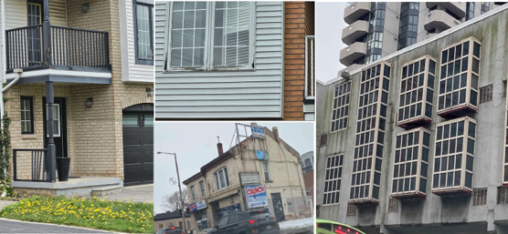
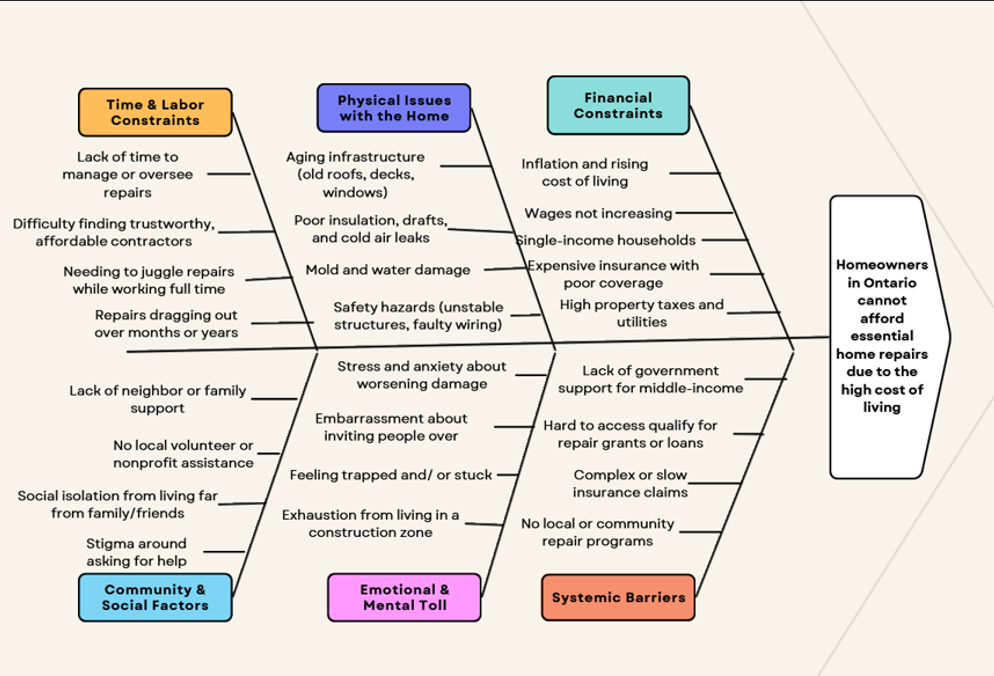
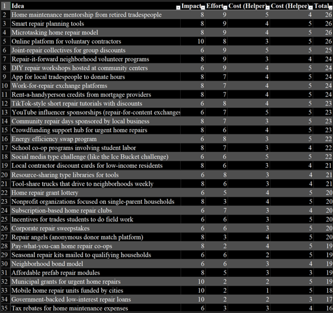

Creativity Assignment: Final Portfolio
Brad W Levinsky
Sheridan College
SOCS10172GD Principles of Creative Problem Solving
Chris Ambedkar
June 20, 2025
Introduction
This project explores a real-world problem affecting many Ontarians; the inability to afford essential home repairs due to the province’s high cost of living. After observing signs of neglect in both suburban and urban neighborhoods, I tried to evaluate this problem through the lens of creative problem solving while trying to pay attention to how financial constraints impact single income households’ ability to maintain a safe and healthy home environment.
Summary of parts 1-4
Part 1: Observation
Throughout my daily life I have observed signs of disrepair across homes in Ontario, specifically in Burlington, Oakville, Mississauga, Brampton, Toronto, and Hamilton, but I assume it is an across Ontario problem. The disrepair usually came in the following forms, rotted wood, cracked walls, and other visible structural neglect. These are issues that are often overlooked are symptoms of a larger systemic challenge: residents must prioritize basic needs like food or medical care over home repairs. Even when those home repairs pose health and safety issues.

Part 2: Empathy interview and Research
Through an interview with a single parent with an earning of over $100,000 per year, I learned that even middle-income earners struggle to afford home maintenance. Even though she had a relatively high income she still had to prioritize groceries, education costs, car payments and other such bills over necessary rep[airs. She described living in a home that not only aggravated her asthma but also caused her embarrassment and created ongoing stress. She avoided inviting guests over due to the visible disrepair and felt that her living situation was “barely livable.”/ The emotional toll she had to gone through was substantial and she expressed feeling trapped, unable to either afford the repairs her house or relocate to a better space.
Her story aligned with the broader economic data I uncovered in my secondary research. For instance, it’s recommended that homeowner’s budget between 1% and 5% of their homes value annually for maintenance. With the average home price in Ontario reaching over 1 mill, which equates to 10,000 to 50,000 per year, which is an enormous sum for the average person (Scotiabank, 2021). When you compare that with the average salary in Ontario, which sits around 54,834 per year, as of May 2025 (ZipRecruiter, 2025), even following the low end of 1%, that would be almost 20% of a person’s income.
Part 3: Problem Analysis
To better understand the root cause of the problem, I used a fishbone Diagram to break it down into major contributing factors. These include the rising material and labor course, absence of accessible fantail support programs, limited time or knowledge for DIY repairs and the emotional stress caused by a deteriorating living environment. This method helped me visualize the systemic and personal dimensions of the issue, emphasizing how interconnected financial hardships, emotional wellbeing and physical systems are for homeowners.

Based on this analysis, I developed a Point of View statement to guild my formation of ideas: “A single parent homeowner in Ontario needs to maintain a safe and livable home for their family because of rising costs and limited support systems make it nearly impossible to keep up with essential repairs” From there, I generated a list of how might we questions that aimed to explore multiple avenues of solution developments, some the most insightful questions included:
- How might we make essential home repairs more financially accessible for single-income households?
- How might we connect struggling homeowners with affordable or volunteer contractors?
- How might we reduce the stigma around asking for help with home repairs?
- How might we improve or simplify access to government repair assistance?
Among these, and more that I had generated, I believe that the most useful and focused question was:
How might we make essential home repairs more financially accessible for single-income households?
I choose this question because I believe it directly addresses the core constraint behind the problem: affordability.
Part 4: Idea Generation
Using the “How Might We” question from part 3, “How might we make essential home repairs more financially accessible for single-income households”, I began brainstorming as many solutions as possible using divergent thinking techniques. I generated over 30 creative ideas and varied ideas ranging from government backed loan programs and mobile repair units to community bases initiatives like volunteering repair days and tool sharing programs.
To ensure a degree of fairness throughout the selection process I applied a scoring method inspired by the impact/ effort matrix, while also factoring in the cost for both the helper and the helpee. Each idea was scored on a scale from 1 to 10 for Impact and Effort, and from 1 to 5 for both Helper Cost and Helpee Cost. These scores were totaled to give each idea a final ranking. I believe this method helped balance feasibility with effectiveness and ensured that solutions were grounded in real-world limitations.

After reviewing the highest scoring ideas, I selected the solution that I feel best addressed the problem’s core issue while being realistic and scalable:
-
Home maintenance mentorship from retired tradespeople
This idea proposes a volunteer mentorship network where retired professionals (such as electricians, carpenters, and HVAC technicians) guide homeowners through essential repairs. The retirees would offer their time and expertise, while the homeowners provide materials and labor. This peer-based model drastically reduces labor costs and promotes skill-building and empowerment.
I chose this idea because it had a high impact score and required relatively low effort to put it into practice. As someone with background in HVAC and general renovations, I have access to a network of retired trades people , friends and family who fit the criteria and would be willing to help. When people retire, they generally live sedentary lives which can negatively impact their health, some of them feel like they have no purpose or anything to do as they do not always retire because they want to but are forced to due to old age. This gives them an opportunity to go out and share their knowledge, meet new people and help their community.
The cost to the mentor is primarily time, with little to no financial burden. The cost to the homeowner is reduced as they would only need to purchase materials, not professional labor. The added benefit is that this program promotes community connections, and as mentioned it reduces the social isolation for retirees and empowers homeowners with new skills they can use again in the future. This solution not only saves money, but it can also allow people to feel less alone, more confident, and more in control of their living situations.
Prototype
Recognizing that nearly everyone uses the internet regularly, I chose to build a website as my prototype. I titled the website: FixIt Forward, and its goal is to connect homeowners in need of repair assistance with skilled mentors who can guide or help them.
I created a mock user profile for my professor, Chris Ambedkar, using publicly available information from the Sheridan College website:
You can view the prototype here:
The website includes a homepage with a header and navigation bar linking to the following pages:
Find Help (Search function)
Because my site is hosted freely on GitHub, it operates as a static site, meaning it cannot store user data, validate input, or access a database. As such, features like user authentication and personalized search are not functional. For the purpose of illustrating the concept, the static mockup communicates the intended experience effectively.
The login page allows users to input any username and password combination, which will redirect them to the prebuilt profile page for Professor Chris Ambedkar. This profile includes contact information, skills he can offer as a mentor, areas where he needs assistance as a homeowner, and a brief biography.
The search page (labeled "Find Help") includes a location-based filter where users can select different regions and cities within Ontario. Once submitted, it redirects to a mock search results page displaying fictional user profiles. These profiles can be clicked to view individual static profile pages for each example user.
While the current version of the website lacks real-time interactivity, its structure lays the foundation for a future dynamic version with user authentication, skill-based matching, and contact features.
Reflection
Throughout this site I gained a deeper understanding of creativity, I have taken almost all of the other creativity classes, so it is nice that this project expands upon that knowledge. Working through this project showed me that creativity is not just for artists, it's a tool that can be used for solving everyday problems, like in this instance fixing up homes on a budget. I learned that creativity is not limited to artistic expressions, it can also be used to build systems, build connections and develop meaningful solutions. In this case, it meant thinking critically about how to bridge the gap between homeowners who need help and tradespeople who are willing to give back.
Coming from a trade and renovation background, I initially approached the issue from a very technical and logical perspective, however through the empathy interview and research, I learned to view the problem through a more “human” centered lens.
What worked well was the decision to build a semi-functional mock website. It gave form to my ideas and allowed me to explore how digital tools can be used to bring people together. Using GitHub Pages to host a static site was effective and cost effective, and I feel like it demonstrated the concepts clearly without needing a full backend system.
If I were to do this project again, or continue with it, I would explore making the website more dynamic, possibly incorporating a real database and authentication system. This would allow users to register a real account, match based on skills and needs and securely exchange contact information. I would also consider expanding the user search portion by speaking to multiple homeowners and mentors to get a broader range of perspectives.
Conclusion
This project gave me the chance to apply creative problem solving to a real world and over overlooked issue: the difficulty of affording home repairs. Throughout each stage of the project, I developed a deeper understanding of emotional, financial and systemic challenges that people face in maintaining livable homes.
One of the most eye-opening lessons was how difficult it can be to get someone to open up about a problem that they feel embarrassed by. Talking about a home in disrepair carries a lot of stigma, especially for people who feel they “should” be able to manage it themselves. This made it challenging to get someone who would be willing to sit down with me for an interview and reminded me that solving real problems requires sensitivity, patience and having built up some degree of trust. You can’t really design a system to help people if they don’t feel safe enough to share what they’re going through.
Despite these challenges, going through this entire process taught me how powerful empathy and creativity can be when they are used together. I learned to frame problems in ways that invite solutions, and to adapt abstract concepts and try to turn them into something more tangible. Overall, I feel like I came away with stronger research skills, and a better application on how emotional barriers affect practical issues.
References
Scotiabank. (2021, September 20). How much should I budget for home maintenance costs? Scotiabank.
https://www.scotiabank.com/ca/en/personal/advice-plus/features/posts.how-much-should-i-budget-for-home-maintenance-costs.html
ZipRecruiter. (n.d.). Salaries: What is the average salary in Ontario? Retrieved May, 2025, from
https://www.ziprecruiter.com/Salaries/--in-Ontario